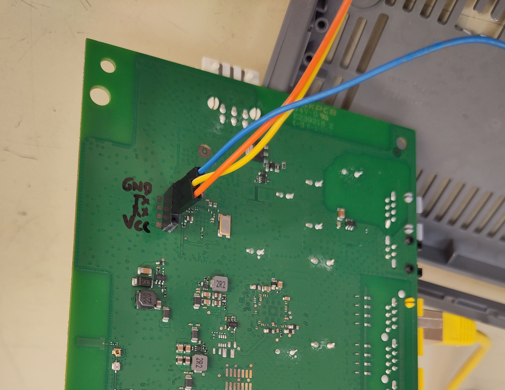
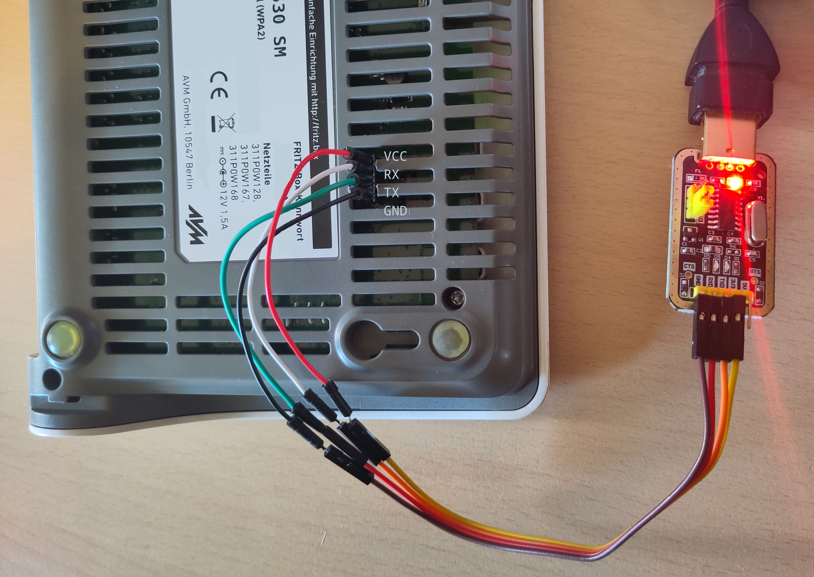

How to fix a soft-bricked FritzBox 7530 after installing OpenWrt
This is a filler episode in the post series about tall datagrams.
Other posts in the series
- Datagrams must be this tall to ride (Part 1)
- (this post)
Everybody knows troubleshooting a misbehaving ISP connection wouldn't be fun unless the router soft-bricked halfway through.
This reminds me of the lightbulb scene from the "Malcolm in the Middle" series.
Symptoms
Here is how the issue presents itself:
-
I flashed an OpenWrt image on a FritzBox 7530 router using
sysupgrade. -
On the next reboot, the "Power/DSL" LED flashed a few times, then stayed constantly lit up, but the router didn't actually come online. No ping response and no SSH connectivity could be obtained.
Triage
If you have a soldering iron and a USB-to-TTL adapter, you can follow the steps mentioned next to confirm you're seeing the same issue I am seeing. If instead you're feeling lucky, you can just jump to the next section.
If you don't have a soldering iron and USB-to-TTL adapter, you can probably borrow them from your local hackerspace. If you want to buy a USB-to-TTL adapter, the "AZDelivery USB TTL Adapter with CH340G" is the one I used (disclaimer: not an affiliated link).
For wiring the serial connection to the router, I recommend reading the dedicated page on the OpenWrt wiki. It contains a lot of useful guidance for newcomers.
Warning
There is one thing that the wiki got wrong for my adapter. The wiki recommends NOT connecting the VCC pin of the USB-to-TTL adapter. But for my adapter, connecting it was required to make it work. Before you connect it, make sure that the voltage rating (usually 3.3V or 5V) of the adapter matches that of the router.
Additionally, the OpenWrt wiki page for the FritzBox 7530 contains information on the serial port header location. Based on that information, I soldered some female headers for ease of use.

The serial connection headers soldered on the FritzBox 7530.
I punched a hole in the plastic case so that the USB-to-TTL adapter can be connected without removing the case.

Connecting to the serial port on the FritzBox 7530 through the USB-to-TTL adapter.
Warning for Windows Users and PL2303 chips
Some USB-to-TTL adapters use a counterfeit PL2303 chip. As a result, they might not work out of the box on Windows because the company making the original chips, Prolific, released a Windows driver that refuses to work with counterfeit chips. Here is a working fix for the driver, which requires .NET Framework 3.5. If you find issues installing .NET Framework 3.5, consider also following these steps.
After you've wired the router to the serial, open a connection with your favorite serial port interface. For example, using GNU Screen
Refresher on GNU screen commands
- Add the
-h 10000argument to increase the size of the scrollback buffer to 10000 lines (it's quite limited by default on most distros). - Enter scrollback mode (where you can use arrows to scroll through the
console history) with
Ctrl-a,Esc. Exit scrollback mode withEsc. - Kill current window with
Ctrl-a,k.
Once you've established a good serial connection with no garbled text, power cycle the router and look at the console output. If the following lines are shown, then you're facing the same issue I did:
UBI warning: print_rsvd_warning: cannot reserve enough PEBs for bad PEB handling, reserved 1, need 8
UBI error: ubi_wl_init_scan: no enough physical eraseblocks (0, need 1)
UBI error: ubi_init: cannot attach mtd1
UBI error: ubi_init: UBI error: cannot initialize UBI, error -12
UBI init error 12
eth0 PHY0 Down Speed :10 Half duplex
eth0 PHY1 Down Speed :10 Half duplex
eth0 PHY2 Down Speed :10 Half duplex
eth0 PHY3 Down Speed :10 Half duplex
eth0 PHY4 Down Speed :10 Half duplex
...
Cause
The cause was identified by @mjw99 in this GitHub issue, along with a temporary workaround. Thanks, mjw99! More recently, this issue was opened on the official OpenWrt repository.
The sequence of events seems to be the following:
-
When an OpenWrt image is flashed with
sysupgrade, all of the storage space available on the FritzBox 7530 is split among 3 volumes:- A
kernelvolume of 3.5 MiB - A
rootfsvolume of 5.2 MiB - A
rootfs_datavolume of 92.5 MiB
On the FritzBox 7530, the storage device is a NAND flash chip. To provide wear leveling of NAND storage, OpenWrt uses Unsorted Block Images (UBI).
- A
-
On the next reboot after
sysupgradeis run, UBI first checks for Physical Erase Blocks (PEBs) marked as "bad". A PEB is the smallest block of storage that can be erased on a NAND chip (if you're interested, you can find here a very interesting blog series about how NAND storage works and even a little bit of its history). PEBs can be marked as bad either by the manufacturer or after a failed I/O operation. -
If the good PEBs are not sufficient to back the requested volume size plus some spares (as in the case of my router), UBI reports an error and the U-Boot bootloader cannot proceed with regular boot.
Solution
At the time of writing, a permanent fix is not available. A potential fix is under review for the U-Boot bootloader used on FritzBox 7530 but has not been merged upstream yet.
A temporary fix is described next. It consists of shrinking the size of the
rootfs_data volume. In this way, the number of free PEBs is sufficient for UBI
to back the requested volumes. The new volume size is persisted across reboots.
Unfortunately, the rootfs_data volume will be resized back to its full size
whenever sysupgrade is run. Therefore, you'll have to repeat this process
after flashing a new OpenWrt version.
-
First, gather:
-
Boot the initramfs image of OpenWrt. Since this is loaded from RAM, it will run regardless of the PEBs' state. You can do this by following steps 1 through 3 of the flashing instructions on the FritzBox 7530 wiki page.
Tip
Getting the device to boot from TFTP might require several attempts to get the timing right. If you have already flashed U-Boot and have the serial console already set up, there is a way to reliably boot an image from a TFTP server.
-
Set up the TFTP server to serve the initramfs image as explained in the OpenWrt wiki.
-
Power-cycle the router with the serial console connected. When the console shows the message
Hit any key to stop autoboot, then hit any key. This will get you the U-Boot interactive prompt. -
Type the following commands to set up networking
Test connectivity to the TFTP server (assuming its IP is 192.168.1.70)
Then boot the initramfs image named
FRITZ7530.binserved by the TFTP server
-
-
Open a shell on the initramfs image you just booted, either with the serial console or SSH.
Info
If you had already connected with SSH to the system before booting the initramfs image, you might get the following error
@@@@@@@@@@@@@@@@@@@@@@@@@@@@@@@@@@@@@@@@@@@@@@@@@@@@@@@@@@@ @ WARNING: REMOTE HOST IDENTIFICATION HAS CHANGED! @ @@@@@@@@@@@@@@@@@@@@@@@@@@@@@@@@@@@@@@@@@@@@@@@@@@@@@@@@@@@ IT IS POSSIBLE THAT SOMEONE IS DOING SOMETHING NASTY! Someone could be eavesdropping on you right now (man-in-the-middle attack)! It is also possible that a host key has just been changed. The fingerprint for the ED25519 key sent by the remote host is SHA256:yK/IxrI/BERvxC8KdyIX8m1Tz6dyhAtz1X9k386tPqg. Please contact your system administrator. Add correct host key in /home/user/.ssh/known_hosts to get rid of this message. Offending ED25519 key in /home/user/.ssh/known_hosts:57 Host key for 192.168.1.1 has changed and you have requested strict checking. Host key verification failed.This is likely because the system booted from the initramfs image is using an SSH key generated on-the-fly. Your SSH client is baffled because it expected the SSH key of the original system.
To fix the issue, run
ssh-keygen -R 192.168.1.1to delete all known fingerprints of the OpenWrt SSH keys. -
Transfer the sysupgrade image to the router. For example, with
scpNote
The
-Oargument is required because, by default, the SSH server on OpenWrt does not expose an SFTP server. Therefore,scpmust be configured to use the "legacy SCP protocol". -
Flash the sysupgrade image on the router, with the
-nargument to discard the existing configuration (you already have the backup, right?) -
sysupgradenow recreates therootfs_datavolume to occupy all of the available storage, which will make the router fail to boot again. To ensure a successful boot, the volume needs to be shrunk first. To do so, repeat the instructions in step 2 to boot the initramfs image one more time. -
Connect once more to the initramfs system, either via the serial console or via SSH.
-
Use the
ubinfocommand to verify the current volumes on UBI deviceubi0:# ubinfo -d 0 ubi0 Volumes count: 3 Logical eraseblock size: 126976 bytes, 124.0 KiB Total amount of logical eraseblocks: 849 (107802624 bytes, 102.8 MiB) Amount of available logical eraseblocks: 0 (0 bytes) Maximum count of volumes 128 Count of bad physical eraseblocks: 23 Count of reserved physical eraseblocks: 0 Current maximum erase counter value: 54 Minimum input/output unit size: 2048 bytes Character device major/minor: 245:0 Present volumes: 0, 1, 2The last line of the command output indicates that 3 UBI volumes are present, with IDs 0, 1, and 2.
-
Now check the volume with ID 2 on the
ubi0device. It should have a size of around 92.5 MiB and should be namedrootfs_data. -
Resize the volume to a smaller value. Depending on how many bad PEBs you have, you can try a larger or smaller value. If the value you pick is too large, you will face the boot error again on the next boot (but no worries, you just need to repeat these steps once more). If the value you pick is too small, you waste storage space that could be used by OpenWrt. In my case, I chose a conservative value
Now, let's check the size again to verify that the volume was shrunk.
-
Reboot the device.
On the next reboot, the serial console should display a message like
Read 0x0 bytes from volume [kernel] offset 0x0 to 85000000 No size specified -> Using max size (0x383000) UBI: scrubbed PEB 721 (LEB 0:0), data moved to PEB 467 UBI: scrubbed PEB 725 (LEB 0:4), data moved to PEB 516 UBI: scrubbed PEB 727 (LEB 0:6), data moved to PEB 504 UBI: scrubbed PEB 731 (LEB 0:10), data moved to PEB 0 UBI: scrubbed PEB 732 (LEB 0:11), data moved to PEB 498 UBI: scrubbed PEB 735 (LEB 0:14), data moved to PEB 489 UBI: scrubbed PEB 738 (LEB 0:17), data moved to PEB 480 UBI: scrubbed PEB 739 (LEB 0:18), data moved to PEB 462 UBI: scrubbed PEB 740 (LEB 0:19), data moved to PEB 458 UBI: scrubbed PEB 743 (LEB 0:22), data moved to PEB 303 UBI: scrubbed PEB 745 (LEB 0:24), data moved to PEB 250 UBI: scrubbed PEB 746 (LEB 0:25), data moved to PEB 244 ## Booting kernel from FIT Image at 85000000 ...and the system should boot fine.
-
Restore the OpenWrt backup from the web interface at http://192.168.1.1 (instructions here).
Other posts in the series
- Datagrams must be this tall to ride (Part 1)
- (this post)